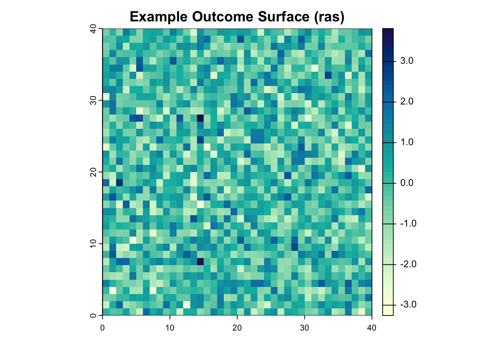
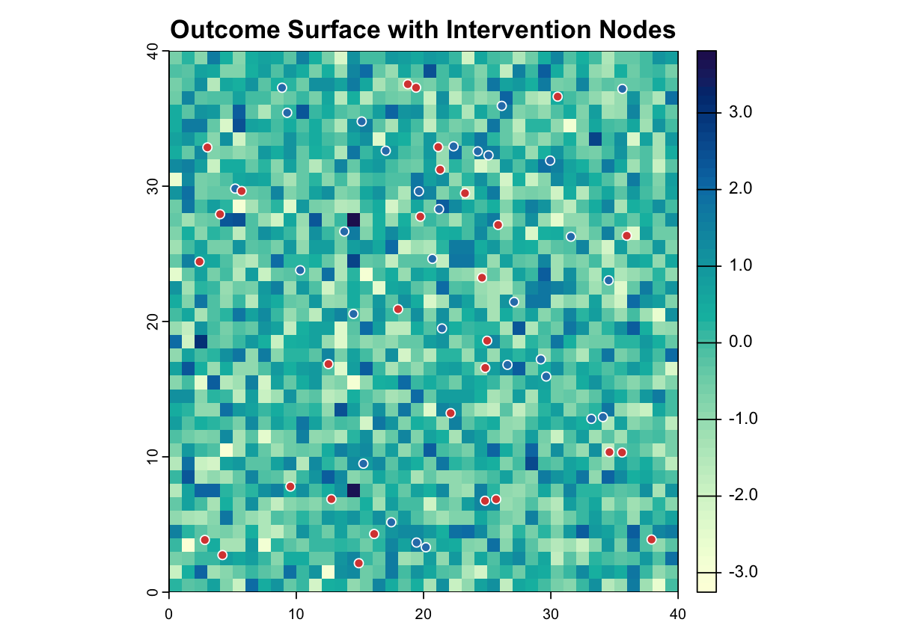
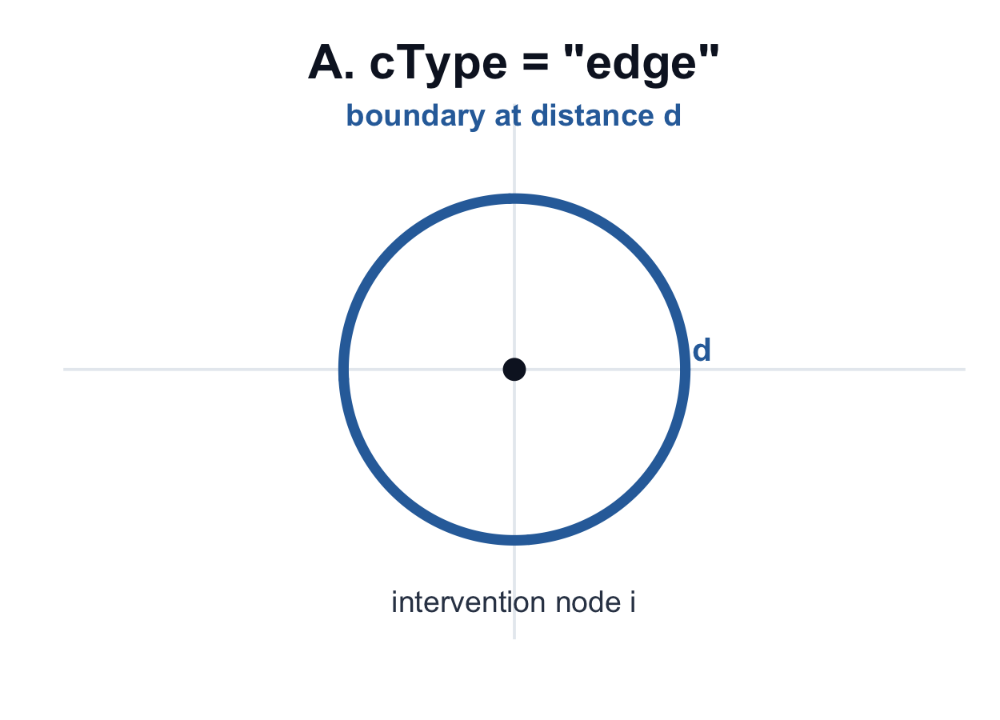
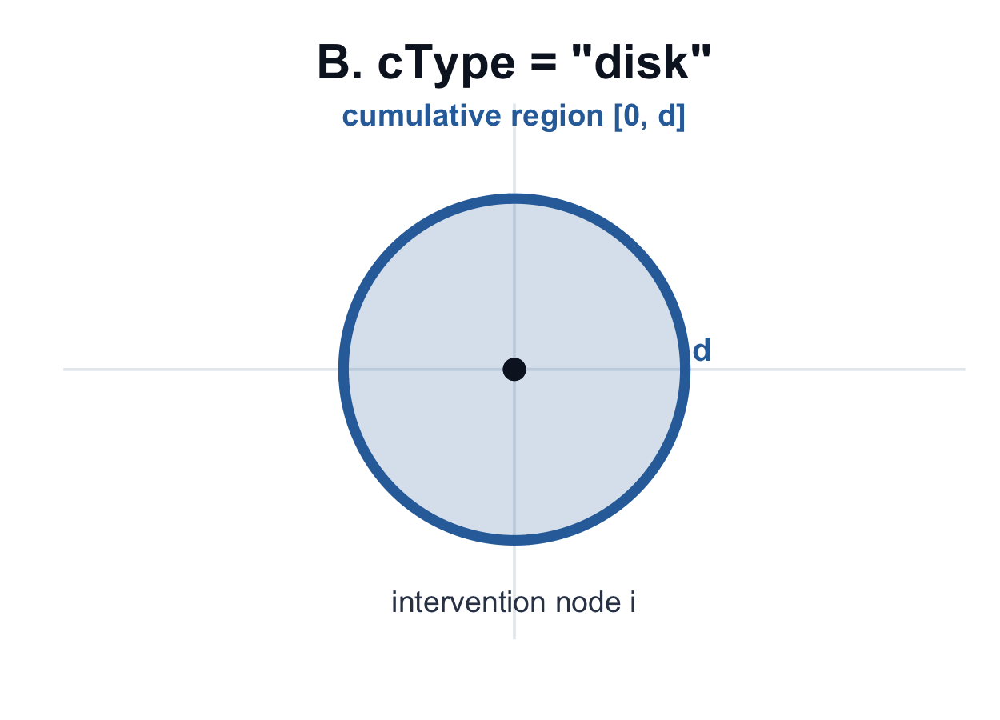
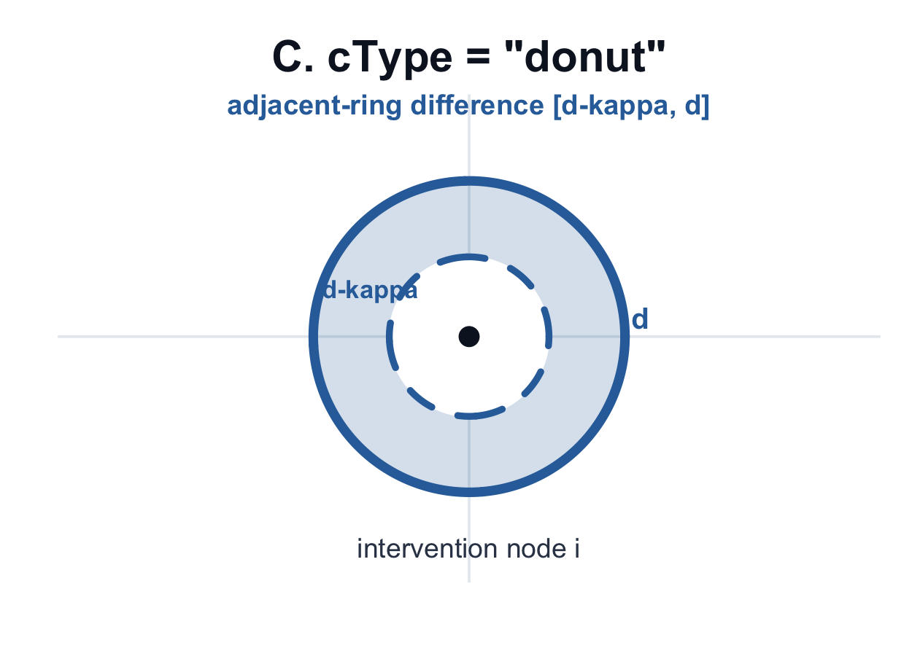
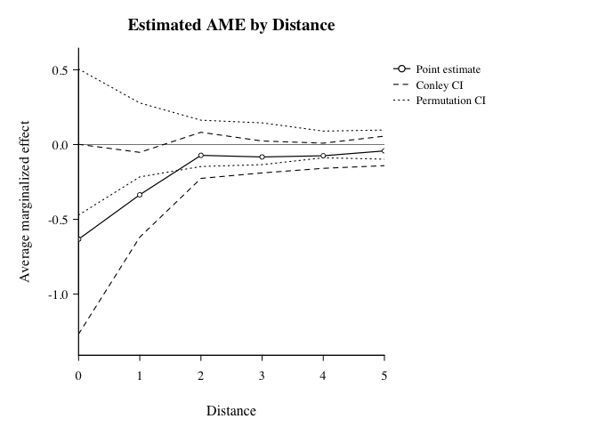

SpatialEffect2 estimates distance-indexed Average Marginalized Effects (AME) for spatial interventions under unknown interference. This tutorial uses a small synthetic point-intervention example so the full workflow runs quickly: prepare an outcome raster, define intervention nodes, estimate the AME curve, add uncertainty, test a distance range, and plot the result.
1. Setup
library(SpatialEffect2)
library(terra)
packageVersion("SpatialEffect2")
#> [1] '0.2.0'2. Prepare Inputs
Outcome surface (ras)
set.seed(2026)
ras <- rast(nrows = 40, ncols = 40, xmin = 0, xmax = 40, ymin = 0, ymax = 40)
values(ras) <- rnorm(ncell(ras))
ras
#> class : SpatRaster
#> dimensions : 40, 40, 1 (nrow, ncol, nlyr)
#> resolution : 1, 1 (x, y)
#> extent : 0, 40, 0, 40 (xmin, xmax, ymin, ymax)
#> coord. ref. : lon/lat WGS 84 (CRS84) (OGC:CRS84)
#> source(s) : memory
#> name : lyr.1
#> min value : -3.048044
#> max value : 3.416480
Point interventions (Zdata)
nz <- 60
Zdata <- data.frame(
x = runif(nz, 2, 38),
y = runif(nz, 2, 38),
treat = rbinom(nz, 1, 0.5)
)
head(Zdata, 6)
#> x y treat
#> 1 9.644531 11.46395 0
#> 2 15.268587 10.50909 1
#> 3 33.337356 12.96211 1
#> 4 21.835087 21.33355 0
#> 5 12.222365 36.60885 0
#> 6 37.129211 37.89930 0
Required columns for point mode:
- treatment column (
0/1) - x/y intervention coordinates
For polygon interventions, pass ras_Z as sf/SpatVector/SpatRaster and keep one row in Zdata per polygon.
3. Choose Distance Design
-
cType = "edge": boundary at distanced(Figure A below)

-
cType = "disk": cumulative region[0, d](Figure B below)

-
cType = "donut": adjacent-ring difference (often most interpretable, Figure C below)

dVec <- seq(0, 5, by = 1)
dVec
#> [1] 0 1 2 3 4 5Practical tip: under donut, choose dVec step size close to raster resolution to reduce empty-ring NA issues.
4. Estimate AME Curve with Uncertainty
result <- SpatialEffect(
ras = ras,
Zdata = Zdata,
x_coord_Z = "x",
y_coord_Z = "y",
treatment = "treat",
dVec = dVec,
cType = "donut",
dist.metric = "Euclidean",
smooth = 0,
per.se = 1,
conley.se = 1,
cutoff = 2,
alpha = 0.05,
nPerms = 200,
perm_engine = "shuffle",
n_threads = 1L
)
ame_table <- data.frame(
d = result$AME_est$d,
AME = result$AME_est$taud_est,
Conley_SE = result$Conley.SE,
Conley_lwr = result$Conley.CI[, 1],
Conley_upr = result$Conley.CI[, 2],
Perm_lwr = result$Per.CI[, 1],
Perm_upr = result$Per.CI[, 2]
)
head(ame_table, 6)
#> d AME Conley_SE Conley_lwr Conley_upr Perm_lwr Perm_upr
#> 1 0 -0.03750097 0.24392269 -0.51558065 0.44057872 -0.5100804 0.48739127
#> 2 1 -0.04369783 0.12841707 -0.29539067 0.20799501 -0.2648224 0.20345510
#> 3 2 -0.02479922 0.07645815 -0.17465443 0.12505600 -0.1505803 0.13944603
#> 4 3 -0.03163822 0.04726418 -0.12427430 0.06099786 -0.1089905 0.09266432
#> 5 4 0.01308657 0.05938572 -0.10330731 0.12948045 -0.1274640 0.09868982
#> 6 5 0.02384883 0.05148026 -0.07705063 0.12474828 -0.1074437 0.076134125. Understand Outputs
SpatialEffect(...) returns class "SpatialEffect".
Common slots:
-
AME_est: data frame withd,taud_est -
Per.CI: permutation CI matrix (length(dVec) x 2) whenper.se = 1 -
Conley.SE,Conley.CI: spatial HAC uncertainty whenconley.se = 1 -
AME_est_smoothed: smoothed AME curve whensmooth = 1 -
Parameters: stored intermediate objects/settings
names(result)
#> [1] "AME_est" "Per.CI" "Conley.SE" "Conley.CI" "Parameters"
#> [6] "call"
summary(result, dVec.range = c(1, 3))
#> Call: SpatialEffect
#>
#> dVec AME_est Conley.CI.l Conley.CI.u Per.CI.l Per.CI.u
#> [1,] 1 -0.044 -0.295 0.208 -0.265 0.203
#> [2,] 2 -0.025 -0.175 0.125 -0.151 0.139
#> [3,] 3 -0.032 -0.124 0.061 -0.109 0.0936. Test Policy-Relevant Distance Ranges
test <- SpatialEffectTest(
result.list = result,
test.range = c(1, 3),
smooth = 0,
alpha = 0.05
)
test
#> $test.stat
#> [1] -0.1001353
#>
#> $test.CI
#> 2.5% 97.5%
#> -0.3809472 0.40649667. Plot Result with plot()
Because result is a "SpatialEffect" object, graphics::plot(result, ...) dispatches to the package’s S3 method, plot.SpatialEffect().
graphics::plot(
result,
smooth = FALSE,
ci.type = "both",
style = "lines",
main = "Estimated AME by Distance"
)
You can also switch to shaded confidence bands:
graphics::plot(
result,
smooth = FALSE,
ci.type = "both",
style = "shade",
main = "AME with Conley and Permutation CIs"
)8. Next Step
This tutorial shows the mechanics of a complete run. For guidance on choosing cType, dVec, uncertainty options, and diagnostics, see the Analysis Workflow.